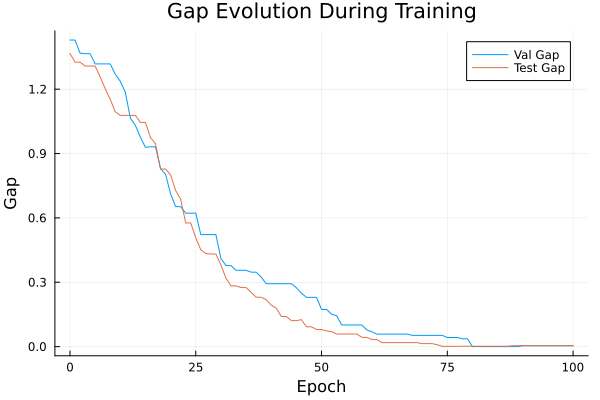
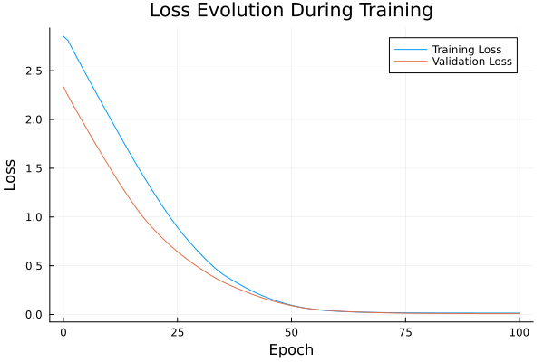

Basic Tutorial: Training with FYL on Argmax Benchmark
This tutorial demonstrates the basic workflow for training a policy using the Perturbed Fenchel-Young Loss algorithm.
Setup
using DecisionFocusedLearningAlgorithms
using DecisionFocusedLearningBenchmarks
using MLUtils: splitobs
using PlotsCreate Benchmark and Data
b = ArgmaxBenchmark()
dataset = generate_dataset(b, 100)
train_data, val_data, test_data = splitobs(dataset; at=(0.3, 0.3, 0.4))(DecisionFocusedLearningBenchmarks.Utils.DataSample{@NamedTuple{}, @NamedTuple{}, Matrix{Float32}, Vector{Float32}, Vector{Float32}}[DataSample(x=Float32[-1.10534 0.485479 … 0.607422 -0.130362; 0.247169 -0.0921054 … -0.227905 0.342355; … ; 0.625987 0.357641 … 1.15847 3.42316; 0.525872 0.120831 … -0.729249 1.20674], θ=Float32[-0.203009, -0.878044, -0.876983, 0.935624, 1.57858, -0.0576886, 0.573294, -0.0713897, 0.269526, -1.20654], y=Float32[0.0, 0.0, 0.0, 0.0, 1.0, 0.0, 0.0, 0.0, 0.0, 0.0]), DataSample(x=Float32[1.48815 0.166383 … 0.702587 0.0695989; 1.38656 -0.935076 … 0.749348 1.45416; … ; -1.70844 -1.4637 … 1.24089 -0.399533; 0.668139 0.484719 … -0.0729047 -0.180269], θ=Float32[0.17007, -0.521515, 0.257073, -1.38977, 0.135895, 1.78571, -0.137139, 1.62564, -0.802223, 0.983162], y=Float32[0.0, 0.0, 0.0, 0.0, 0.0, 1.0, 0.0, 0.0, 0.0, 0.0]), DataSample(x=Float32[-0.625823 1.32178 … 0.625702 -0.952479; 1.4541 -0.604624 … 1.91877 1.07531; … ; 1.81542 -1.3103 … -1.74818 0.197069; 0.960214 0.153295 … -0.67828 -0.923142], θ=Float32[0.0443936, -1.5413, 3.83456, 0.642839, 1.00195, -0.393676, 0.1141, -0.936185, 2.1734, 1.67245], y=Float32[0.0, 0.0, 1.0, 0.0, 0.0, 0.0, 0.0, 0.0, 0.0, 0.0]), DataSample(x=Float32[-0.377581 -0.669471 … 1.5336 -0.356189; -1.30867 0.902397 … -1.18197 -0.394105; … ; 1.52206 -0.0750659 … -0.278288 -0.834575; 2.71578 -1.99366 … 0.647302 1.27704], θ=Float32[-1.42351, 1.42819, 2.55576, -0.511039, 0.213636, -0.434966, -0.626074, -0.72462, -2.32174, 0.514465], y=Float32[0.0, 0.0, 1.0, 0.0, 0.0, 0.0, 0.0, 0.0, 0.0, 0.0]), DataSample(x=Float32[0.709586 0.850252 … -1.32872 -0.486843; 1.16091 -0.822665 … 0.580948 0.784976; … ; -0.039616 0.0727322 … -0.0711312 0.853066; 0.0970923 1.03992 … 0.0877617 0.668411], θ=Float32[-0.474111, -1.53641, 0.113158, 1.27103, -0.266544, 1.99362, 0.401613, -0.264163, 1.73933, -1.21992], y=Float32[0.0, 0.0, 0.0, 0.0, 0.0, 1.0, 0.0, 0.0, 0.0, 0.0]), DataSample(x=Float32[-0.390987 -0.296553 … -1.5016 -0.378311; -1.44293 -1.89135 … -1.42553 -1.64006; … ; 1.65148 -2.81911 … 0.293949 -0.965815; 0.782814 1.79056 … -0.640009 -0.199592], θ=Float32[-1.22977, -2.2504, -2.26253, -0.584415, 0.0337077, 0.379259, 0.98756, -0.559789, -0.26746, -0.474404], y=Float32[0.0, 0.0, 0.0, 0.0, 0.0, 0.0, 1.0, 0.0, 0.0, 0.0]), DataSample(x=Float32[-0.367347 1.23307 … -1.39524 1.67606; 0.652535 -0.890821 … -0.320284 -1.02814; … ; 1.47501 -0.990723 … 0.935933 -0.393902; 0.157098 1.22874 … 1.82259 1.02366], θ=Float32[0.157688, -1.48372, -0.463018, 0.437128, -0.639257, -1.40369, -2.91481, 1.01952, -0.148905, -2.50526], y=Float32[0.0, 0.0, 0.0, 0.0, 0.0, 0.0, 0.0, 1.0, 0.0, 0.0]), DataSample(x=Float32[0.42916 1.02813 … 1.15693 -1.71121; 0.531789 0.087011 … -0.702541 0.809018; … ; -0.230197 -0.721039 … -0.528536 2.34003; -1.11155 0.651753 … 0.700872 0.787476], θ=Float32[1.10609, -1.26277, -2.57357, -2.15999, -0.0160631, -1.63055, 0.612701, 0.858515, -2.24293, 0.987912], y=Float32[1.0, 0.0, 0.0, 0.0, 0.0, 0.0, 0.0, 0.0, 0.0, 0.0]), DataSample(x=Float32[-1.37828 2.03357 … -0.301546 -0.582671; -0.190526 -0.164167 … -0.826219 -0.46721; … ; 0.769592 -1.23761 … -0.358309 -0.844362; -0.961736 0.0422781 … -1.05062 1.52923], θ=Float32[0.739432, -0.0193945, -0.884425, 0.0186026, 0.616649, -2.33639, 1.2809, -1.34174, -0.330737, -0.346329], y=Float32[0.0, 0.0, 0.0, 0.0, 0.0, 0.0, 1.0, 0.0, 0.0, 0.0]), DataSample(x=Float32[-0.944067 0.806899 … 0.670795 1.06632; 0.278856 0.202048 … 0.0203909 -1.07224; … ; 1.13053 -0.504394 … -1.53308 -1.82317; -0.63045 0.13384 … 0.881392 -1.35794], θ=Float32[0.2712, -0.841434, -1.06545, -0.461563, -0.266173, 0.730602, -0.550661, 0.232376, -0.658583, -1.7731], y=Float32[0.0, 0.0, 0.0, 0.0, 0.0, 1.0, 0.0, 0.0, 0.0, 0.0]) … DataSample(x=Float32[-1.02781 -0.502479 … -0.0411664 2.16349; 1.6339 0.519037 … -0.388251 -0.378256; … ; 1.12329 -1.2742 … -0.0340596 -1.18033; 0.00640301 -1.23434 … 1.0217 -1.04255], θ=Float32[1.33988, 1.13531, 2.32664, -2.37388, 1.54563, 0.0586989, -0.22321, -0.434433, -0.643305, -1.62682], y=Float32[0.0, 0.0, 1.0, 0.0, 0.0, 0.0, 0.0, 0.0, 0.0, 0.0]), DataSample(x=Float32[0.360557 -0.917259 … 1.03725 -1.71588; 0.0398787 -1.91622 … 1.15991 1.92664; … ; 0.678611 0.229511 … 0.499122 2.8467; 0.0786823 -0.245206 … 0.00595958 -0.0791199], θ=Float32[-0.351369, 1.09754, 0.238441, -1.74909, 1.25181, 1.06898, 0.285809, 1.39487, -0.143959, 1.74595], y=Float32[0.0, 0.0, 0.0, 0.0, 0.0, 0.0, 0.0, 0.0, 0.0, 1.0]), DataSample(x=Float32[-0.309287 0.698852 … -2.11804 1.52633; -0.837721 0.402074 … 0.554742 0.302472; … ; -0.732851 0.475378 … 0.0102898 1.66314; -1.31945 1.18926 … -0.318801 1.26733], θ=Float32[1.03639, 0.16654, 0.351958, 1.26764, 0.140094, 1.0807, 0.110591, -0.469243, 2.70764, -0.573989], y=Float32[0.0, 0.0, 0.0, 0.0, 0.0, 0.0, 0.0, 0.0, 1.0, 0.0]), DataSample(x=Float32[1.19471 0.38615 … -1.27839 -1.25835; -0.456025 -0.0772095 … 1.2821 0.839441; … ; -0.406296 -0.673183 … 1.29781 -0.939422; -0.23281 1.41185 … -0.980891 -1.41264], θ=Float32[-1.1913, -1.63296, -1.57287, 0.243005, 0.173013, -0.04158, 1.08038, 1.37741, 1.70072, 2.04745], y=Float32[0.0, 0.0, 0.0, 0.0, 0.0, 0.0, 0.0, 0.0, 0.0, 1.0]), DataSample(x=Float32[1.86392 -0.310883 … 0.171169 -1.64026; 1.14106 0.477622 … 0.9724 -1.41336; … ; 0.161924 -1.97428 … 0.560431 -0.567736; 0.311948 -0.774982 … 0.441869 -1.30873], θ=Float32[-0.841322, 1.34668, -0.416628, -0.0826456, -3.18694, 1.51416, -1.07434, -2.90879, -0.309217, 1.11152], y=Float32[0.0, 0.0, 0.0, 0.0, 0.0, 1.0, 0.0, 0.0, 0.0, 0.0]), DataSample(x=Float32[0.0868438 0.716292 … 0.416866 -0.955318; 1.16833 -0.0951807 … 0.709438 0.592224; … ; -1.80268 1.09577 … 0.446405 -0.318868; 0.456504 0.308363 … -0.0117241 0.532024], θ=Float32[1.05387, -0.640944, -0.163937, 1.23352, -1.2132, 0.36587, -0.333087, 2.76816, 0.176653, 0.491432], y=Float32[0.0, 0.0, 0.0, 0.0, 0.0, 0.0, 0.0, 1.0, 0.0, 0.0]), DataSample(x=Float32[-1.06732 -0.335286 … -0.19209 -0.376972; 1.40595 -0.490857 … -0.112485 -0.16643; … ; 1.69695 -1.46274 … -0.618177 -0.218768; 0.363693 0.897661 … 0.0905328 -0.292786], θ=Float32[1.61178, -0.956972, -0.704538, -2.09462, 1.76234, -0.758516, 1.09503, -1.70444, -0.266472, 0.788773], y=Float32[0.0, 0.0, 0.0, 0.0, 1.0, 0.0, 0.0, 0.0, 0.0, 0.0]), DataSample(x=Float32[0.706563 -1.05715 … 0.751828 -0.488979; -0.146453 -1.2251 … 0.907684 0.405332; … ; 1.57784 -0.136777 … 0.964855 1.46175; 0.96716 1.41903 … 1.51814 -0.682797], θ=Float32[-1.55474, -0.546664, 0.99294, 0.681282, -0.547187, -0.792295, 0.0642801, -0.417131, -2.13155, 1.02764], y=Float32[0.0, 0.0, 0.0, 0.0, 0.0, 0.0, 0.0, 0.0, 0.0, 1.0]), DataSample(x=Float32[0.329956 -0.638464 … -0.782589 -0.324496; -0.363728 0.245529 … -0.527259 0.552526; … ; 0.568166 -1.47847 … 0.0901826 -1.13789; 0.327113 1.05041 … 1.26505 1.40104], θ=Float32[0.572023, -1.10902, -1.97201, -1.19216, -0.397544, 1.46257, 0.0686533, 0.108159, -1.00077, 0.435173], y=Float32[0.0, 0.0, 0.0, 0.0, 0.0, 1.0, 0.0, 0.0, 0.0, 0.0]), DataSample(x=Float32[0.260263 -0.4802 … -0.231724 -0.933694; 0.528364 0.648118 … 0.273415 -0.103317; … ; 0.66435 0.14397 … 1.51063 -0.82114; -0.14589 -0.13583 … -1.04375 0.381637], θ=Float32[0.38993, 1.11081, 0.447016, 0.36427, -0.73284, -1.50595, -0.706086, -1.212, 1.04698, 1.2842], y=Float32[0.0, 0.0, 0.0, 0.0, 0.0, 0.0, 0.0, 0.0, 0.0, 1.0])], DecisionFocusedLearningBenchmarks.Utils.DataSample{@NamedTuple{}, @NamedTuple{}, Matrix{Float32}, Vector{Float32}, Vector{Float32}}[DataSample(x=Float32[0.289612 -2.0787 … 0.267729 1.4739; 0.698607 -0.0770362 … -0.529956 0.489718; … ; -1.15826 -0.361813 … -1.15471 -0.232605; 3.24218 -0.908316 … 0.119268 -0.326286], θ=Float32[-1.25884, 2.18632, -0.227737, 1.25123, 0.582972, 1.1488, -0.14471, 2.1963, 0.955098, -0.939769], y=Float32[0.0, 0.0, 0.0, 0.0, 0.0, 0.0, 0.0, 1.0, 0.0, 0.0]), DataSample(x=Float32[-1.83449 -1.36591 … -1.04998 -0.855106; 2.73212 0.56757 … 0.407819 0.174898; … ; -0.697226 -1.44012 … 0.221067 -0.663517; 0.849234 -1.16265 … -1.27007 -0.518177], θ=Float32[1.89353, 2.49466, -0.742315, -0.843048, 0.113765, 1.80477, 3.01341, -1.23198, 2.36118, 1.07532], y=Float32[0.0, 0.0, 0.0, 0.0, 0.0, 0.0, 1.0, 0.0, 0.0, 0.0]), DataSample(x=Float32[1.82643 0.692819 … -1.86826 0.308607; -1.19296 0.906968 … -0.139455 0.371607; … ; 1.27325 -0.583818 … -1.15996 -1.18695; 0.251889 0.36899 … -0.873378 -1.62513], θ=Float32[-3.17942, 0.478274, -0.652028, 1.20939, -1.48908, -2.36453, 0.65786, 1.49619, 2.46757, 1.32064], y=Float32[0.0, 0.0, 0.0, 0.0, 0.0, 0.0, 0.0, 0.0, 1.0, 0.0]), DataSample(x=Float32[0.323805 0.705572 … -0.235705 -1.61808; -0.888461 1.39024 … 0.831422 -0.472458; … ; 1.58931 -1.38212 … -0.307598 -1.26505; 0.0525974 0.899701 … 0.268216 1.71576], θ=Float32[-2.10546, -0.233084, 0.274843, -1.39221, 0.559734, -0.113865, -0.144172, 0.568308, 1.22145, 0.450292], y=Float32[0.0, 0.0, 0.0, 0.0, 0.0, 0.0, 0.0, 0.0, 1.0, 0.0]), DataSample(x=Float32[0.177157 0.549127 … 0.15418 -0.863434; -1.0156 -0.648909 … -0.71432 0.996102; … ; -0.983644 -1.11832 … -1.91763 1.26072; -1.04428 0.182482 … 1.18871 -0.381828], θ=Float32[0.527991, -1.67475, -0.792846, -2.48061, -0.159222, 0.462613, 0.166131, 0.269803, -0.802278, 0.368972], y=Float32[1.0, 0.0, 0.0, 0.0, 0.0, 0.0, 0.0, 0.0, 0.0, 0.0]), DataSample(x=Float32[0.15174 1.05483 … -1.49668 3.32321; -0.601897 0.625859 … -0.425005 -2.04799; … ; 2.49216 -0.0915818 … -2.20532 0.767642; -0.27799 1.43366 … -0.101344 -0.786963], θ=Float32[0.420036, -0.647383, -0.136989, 0.58795, 1.07535, -2.19679, 0.0819251, 1.10039, -0.322036, -3.71041], y=Float32[0.0, 0.0, 0.0, 0.0, 0.0, 0.0, 0.0, 1.0, 0.0, 0.0]), DataSample(x=Float32[-0.000653736 0.832075 … 0.593043 -0.107152; -1.71497 0.371882 … -0.728994 -0.107755; … ; -0.385115 -1.11467 … -0.711632 1.29412; -0.76119 -0.277969 … 0.996913 1.21228], θ=Float32[0.915101, 0.783095, -0.274772, 1.62079, -0.484871, -0.479837, 0.0415044, -1.2227, -2.2377, -1.95043], y=Float32[0.0, 0.0, 0.0, 1.0, 0.0, 0.0, 0.0, 0.0, 0.0, 0.0]), DataSample(x=Float32[0.634255 3.01823 … 0.0403124 1.08073; 1.23781 -0.23444 … -0.102944 -0.504371; … ; 1.34303 0.286814 … 0.799558 0.840075; -0.209775 -1.59432 … 0.794931 -0.635474], θ=Float32[0.246557, -0.447146, 0.430043, 0.0138416, 1.56603, 1.04472, 0.102999, 3.19584, -1.07405, 0.0533125], y=Float32[0.0, 0.0, 0.0, 0.0, 0.0, 0.0, 0.0, 1.0, 0.0, 0.0]), DataSample(x=Float32[0.346226 -1.29013 … 0.674855 0.917774; -0.718814 1.09817 … 0.717881 0.163011; … ; -1.638 0.867745 … -1.21583 -1.10304; -0.441312 -0.0649635 … 0.346062 0.177159], θ=Float32[-0.645587, 1.50685, 0.377073, 1.82947, 1.62155, 0.135109, -0.813741, 0.814422, -0.831679, 0.74196], y=Float32[0.0, 0.0, 0.0, 1.0, 0.0, 0.0, 0.0, 0.0, 0.0, 0.0]), DataSample(x=Float32[-0.0682358 0.330786 … 0.919111 0.00703376; 0.110551 -1.8732 … -0.764953 -2.5205; … ; -1.18887 1.33248 … -0.558141 -1.78725; 1.12594 0.0643514 … 0.0510149 1.73365], θ=Float32[-0.236338, -1.38178, 0.886564, 0.204008, 0.97335, -0.709447, 0.155538, 1.40497, -1.43306, -1.93573], y=Float32[0.0, 0.0, 0.0, 0.0, 0.0, 0.0, 0.0, 1.0, 0.0, 0.0]) … DataSample(x=Float32[0.601791 -0.00185768 … 1.27381 -0.227351; 0.965162 0.0435573 … -0.786783 0.0697673; … ; 0.23622 1.42828 … -1.21551 -1.22269; 0.685536 -0.477722 … 0.62122 0.0185569], θ=Float32[0.189265, -0.49685, 0.738011, -0.600181, -1.34613, 1.52418, -0.855052, 2.45996, -2.03793, 0.370396], y=Float32[0.0, 0.0, 0.0, 0.0, 0.0, 0.0, 0.0, 1.0, 0.0, 0.0]), DataSample(x=Float32[-1.61786 0.923837 … -2.33427 0.205132; -0.0297238 0.290189 … 0.851007 -1.47759; … ; 0.296678 0.00518376 … -1.54337 -0.578634; -0.720867 -0.949603 … -1.08111 -1.15398], θ=Float32[0.929667, 0.0192029, 0.965401, -0.355191, 0.411785, -1.10937, 0.53444, 0.398758, 2.51979, -0.583303], y=Float32[0.0, 0.0, 0.0, 0.0, 0.0, 0.0, 0.0, 0.0, 1.0, 0.0]), DataSample(x=Float32[0.915326 1.30505 … -0.491679 -0.903194; -0.818471 -0.892902 … 0.517259 -0.908562; … ; 0.655701 -0.0481597 … 0.466963 0.727712; -1.91897 -0.550386 … -1.13406 1.37958], θ=Float32[-1.20026, -1.25659, -0.0885566, 1.35128, 1.66259, 2.51232, 1.8139, 1.58893, 0.460609, -1.29873], y=Float32[0.0, 0.0, 0.0, 0.0, 0.0, 1.0, 0.0, 0.0, 0.0, 0.0]), DataSample(x=Float32[-1.91478 -0.790708 … 0.770782 -1.53137; -0.632313 0.105196 … 1.61065 0.38123; … ; -0.363191 0.513681 … 0.427194 -0.288809; 0.443993 0.0774523 … 1.34433 -0.0187491], θ=Float32[0.911201, 0.275447, -0.942799, 1.07931, 0.0851615, -1.47139, 1.44678, -0.90836, 0.122828, 0.857009], y=Float32[0.0, 0.0, 0.0, 0.0, 0.0, 0.0, 1.0, 0.0, 0.0, 0.0]), DataSample(x=Float32[-0.134936 0.0675935 … 1.04033 -0.851869; -1.74685 -1.75535 … -0.626839 -0.477023; … ; -0.343932 -0.81047 … -1.44019 0.549641; 0.252988 -0.38554 … 0.973205 -0.574538], θ=Float32[-1.26759, -0.763187, 0.0235165, 1.45676, -0.570701, 0.475916, 0.360313, -1.59993, -2.12371, 1.76373], y=Float32[0.0, 0.0, 0.0, 0.0, 0.0, 0.0, 0.0, 0.0, 0.0, 1.0]), DataSample(x=Float32[-0.0593006 0.434345 … -0.0976105 0.603084; -0.758119 -0.355943 … -0.346908 0.595974; … ; 1.13497 1.18519 … -1.04504 1.09076; -0.809542 0.289423 … -0.0568565 1.11572], θ=Float32[-0.632111, -1.66767, 0.815184, -2.89775, -0.228505, -1.33122, 0.0587644, -0.649406, 0.119735, 0.0989087], y=Float32[0.0, 0.0, 1.0, 0.0, 0.0, 0.0, 0.0, 0.0, 0.0, 0.0]), DataSample(x=Float32[-1.70946 -0.803098 … -0.528529 1.73125; -0.995051 0.846378 … -1.17714 -0.197474; … ; -0.649261 0.474208 … 0.316262 0.243146; -1.25013 0.366832 … 1.22027 1.06594], θ=Float32[0.871352, 0.75336, -0.658241, -1.65909, -0.483902, -0.197976, 0.63192, 1.05667, -1.04262, -1.16305], y=Float32[0.0, 0.0, 0.0, 0.0, 0.0, 0.0, 0.0, 1.0, 0.0, 0.0]), DataSample(x=Float32[0.936651 -0.219992 … -1.19899 -0.983789; -2.08168 0.101547 … 0.287329 0.191181; … ; 0.727623 -0.20748 … 1.90591 0.936045; 1.1389 0.776919 … -0.948203 0.494259], θ=Float32[-2.1755, -0.447488, -1.45436, 0.308235, 3.39162, -0.707505, 0.0379267, 1.69711, 2.15762, 0.182806], y=Float32[0.0, 0.0, 0.0, 0.0, 1.0, 0.0, 0.0, 0.0, 0.0, 0.0]), DataSample(x=Float32[-0.725094 1.43734 … 0.779517 -0.963238; 0.971836 -1.51164 … -0.0531964 -0.390962; … ; -0.785001 1.13315 … -0.458778 1.50335; 0.104166 -1.20588 … -0.454378 -3.2215], θ=Float32[1.9176, -2.62123, 0.569554, -2.03246, -1.77589, 1.17035, 0.537587, 2.45271, 0.592981, 2.41424], y=Float32[0.0, 0.0, 0.0, 0.0, 0.0, 0.0, 0.0, 1.0, 0.0, 0.0]), DataSample(x=Float32[0.550995 -2.23398 … 0.979398 1.90731; -0.68406 1.99033 … -0.105377 0.22971; … ; -0.599732 0.816529 … -0.998216 -0.430015; -0.423475 -1.1257 … -0.558752 0.810619], θ=Float32[-1.85929, 2.83232, -0.584879, 0.602057, -1.82298, -0.716622, 1.49286, 1.44987, -0.141556, -2.1194], y=Float32[0.0, 1.0, 0.0, 0.0, 0.0, 0.0, 0.0, 0.0, 0.0, 0.0])], DecisionFocusedLearningBenchmarks.Utils.DataSample{@NamedTuple{}, @NamedTuple{}, Matrix{Float32}, Vector{Float32}, Vector{Float32}}[DataSample(x=Float32[0.475413 0.125455 … -1.15967 0.101372; 2.37177 -0.331596 … 0.641139 -1.85349; … ; 0.31362 -0.541575 … -1.36315 -0.423311; 1.15457 -0.0700815 … -0.241719 0.264977], θ=Float32[0.809775, -1.26182, -1.62499, -1.34801, -0.280121, -1.4543, -0.0193675, -0.838106, 3.34756, -2.41199], y=Float32[0.0, 0.0, 0.0, 0.0, 0.0, 0.0, 0.0, 0.0, 1.0, 0.0]), DataSample(x=Float32[1.04939 0.08854 … -1.16328 -0.69467; -0.428594 0.656847 … -1.19551 -0.212695; … ; -0.472794 -1.91257 … -0.0245933 0.9285; 0.203688 0.965523 … -1.18782 0.112689], θ=Float32[-2.3051, -1.68427, 1.16586, 0.327799, -0.619105, 0.0181197, -0.653888, 1.46041, -0.186668, -1.24926], y=Float32[0.0, 0.0, 0.0, 0.0, 0.0, 0.0, 0.0, 1.0, 0.0, 0.0]), DataSample(x=Float32[0.028412 -0.685474 … 0.126464 0.220012; 0.79549 0.510802 … -1.64152 0.805031; … ; -0.826469 1.31286 … 1.6177 -0.115138; 1.85365 0.423616 … -1.98388 0.585567], θ=Float32[-0.0958466, 1.52607, -0.561778, 0.934806, 0.432334, 0.175969, 0.930594, 0.682537, 0.392842, 0.488014], y=Float32[0.0, 1.0, 0.0, 0.0, 0.0, 0.0, 0.0, 0.0, 0.0, 0.0]), DataSample(x=Float32[0.543766 -0.276658 … -0.122191 0.993899; -0.872215 0.238232 … 0.308854 0.674084; … ; -0.270209 -0.103377 … 1.93913 -0.950311; 1.04487 -1.72832 … -0.368188 -2.33386], θ=Float32[-0.618386, 1.28617, 1.43429, -1.01321, 1.71481, -0.204304, 1.12776, -2.08584, -0.232125, 3.18824], y=Float32[0.0, 0.0, 0.0, 0.0, 0.0, 0.0, 0.0, 0.0, 0.0, 1.0]), DataSample(x=Float32[0.0235361 -1.2649 … -0.672602 -2.48191; -0.0428073 -0.502257 … -0.600517 0.186128; … ; -0.799871 -0.882778 … 0.465766 -0.609133; -1.86577 0.918817 … -0.127612 1.58358], θ=Float32[1.37275, -0.643773, -2.92903, 0.88202, -1.01902, 0.128483, 1.13506, -0.45661, -0.370092, 2.4344], y=Float32[0.0, 0.0, 0.0, 0.0, 0.0, 0.0, 0.0, 0.0, 0.0, 1.0]), DataSample(x=Float32[-0.443075 0.4259 … 1.14358 1.17453; -0.0902787 -0.18818 … 0.76574 0.150911; … ; -1.10646 0.390568 … -0.482017 -1.12226; 1.24258 -0.0212755 … 0.206829 -0.239302], θ=Float32[0.283157, -0.38528, 0.42112, -0.221874, -1.08673, -1.51581, -0.647399, -1.90387, -0.416786, -0.612695], y=Float32[0.0, 0.0, 1.0, 0.0, 0.0, 0.0, 0.0, 0.0, 0.0, 0.0]), DataSample(x=Float32[-1.41957 1.06597 … -0.198893 -0.829196; -1.37725 1.41024 … 0.541145 -0.206187; … ; 0.122866 -0.827841 … 0.640759 1.38086; -1.66988 -0.869035 … 1.29437 0.742992], θ=Float32[0.663696, 0.349634, -2.22715, 2.2203, -0.434126, 2.51741, 1.55512, -1.67349, -0.403231, -0.744631], y=Float32[0.0, 0.0, 0.0, 0.0, 0.0, 1.0, 0.0, 0.0, 0.0, 0.0]), DataSample(x=Float32[0.263321 -1.06738 … -0.380632 -0.0757296; 0.451939 -0.189956 … -0.94659 -0.42821; … ; 0.466778 0.779969 … -0.973165 0.0688082; -1.05657 -0.768034 … 1.03068 1.35909], θ=Float32[-0.352216, 0.812076, -0.298144, -1.46945, 0.554045, 2.437, 0.818369, 0.986192, 0.349984, -0.136004], y=Float32[0.0, 0.0, 0.0, 0.0, 0.0, 1.0, 0.0, 0.0, 0.0, 0.0]), DataSample(x=Float32[-1.32812 -0.0732362 … -0.485924 0.311695; 0.185574 0.343032 … 1.34279 -0.282141; … ; -0.918342 1.6474 … -0.602829 0.293254; 0.966718 0.166505 … 1.01673 0.996923], θ=Float32[0.206539, 0.455396, 0.148824, -0.775694, -0.18592, 1.07146, -0.445471, -0.0585942, -0.929993, -1.02934], y=Float32[0.0, 0.0, 0.0, 0.0, 0.0, 1.0, 0.0, 0.0, 0.0, 0.0]), DataSample(x=Float32[0.075843 -0.0957122 … 0.440243 -0.0597291; 0.819173 0.833965 … -1.61983 -0.98778; … ; -0.418005 -0.289571 … -0.146091 -0.505391; -0.319993 0.373067 … 1.8166 -1.73719], θ=Float32[0.248968, 1.62408, -0.370645, -0.516259, 2.16649, -0.356068, 0.484016, -0.0765006, -1.5642, -0.684612], y=Float32[0.0, 0.0, 0.0, 0.0, 1.0, 0.0, 0.0, 0.0, 0.0, 0.0]) … DataSample(x=Float32[-0.339626 -0.61424 … 0.974715 1.08274; -0.46108 -0.678478 … 0.328642 1.14174; … ; -2.39974 -0.247787 … -0.787072 1.24239; 1.03123 0.410043 … 0.972049 0.0694436], θ=Float32[0.467888, 0.600579, 0.467624, -0.161361, 0.289141, -0.154162, 2.72949, -0.0840325, -1.69408, -0.790743], y=Float32[0.0, 0.0, 0.0, 0.0, 0.0, 0.0, 1.0, 0.0, 0.0, 0.0]), DataSample(x=Float32[0.67707 -0.415933 … -0.0142175 -0.367033; -0.299472 0.201483 … 1.20028 -0.870685; … ; 0.844597 1.29041 … -0.903418 0.14749; 0.55383 1.34472 … -0.963229 0.0320402], θ=Float32[-1.622, -1.55965, 2.31462, -0.78332, 1.92464, -0.683791, -0.800251, 1.52223, 2.92559, 0.741209], y=Float32[0.0, 0.0, 0.0, 0.0, 0.0, 0.0, 0.0, 0.0, 1.0, 0.0]), DataSample(x=Float32[-0.452239 -1.48056 … 0.185441 1.30283; 0.44772 0.124039 … 1.7539 0.61113; … ; -1.66448 -0.216048 … 0.700161 0.818654; -0.829909 -0.157767 … 1.91592 1.33669], θ=Float32[1.08338, 1.67995, -0.10854, -0.346168, -1.09399, 0.870637, -0.305846, -3.36814, 0.246129, -2.39111], y=Float32[0.0, 1.0, 0.0, 0.0, 0.0, 0.0, 0.0, 0.0, 0.0, 0.0]), DataSample(x=Float32[-0.974996 0.338736 … 1.00498 -0.721596; 0.685589 -0.298783 … 0.9489 -1.71192; … ; -0.776643 -0.921206 … -0.610655 -0.0589217; -0.907974 0.94437 … -1.39877 1.85658], θ=Float32[1.74849, -0.739925, -0.960522, -1.4245, -0.184351, -0.145626, 0.878068, 0.913321, -0.261899, -1.84], y=Float32[1.0, 0.0, 0.0, 0.0, 0.0, 0.0, 0.0, 0.0, 0.0, 0.0]), DataSample(x=Float32[-0.0768784 -0.863726 … -0.711863 -0.0702567; 0.315218 0.0117596 … 0.745643 -0.722956; … ; -0.30489 0.356638 … 1.25253 -0.684217; -0.385087 0.610228 … 0.211464 0.329281], θ=Float32[0.426302, 0.951024, -1.33262, 1.53145, -0.56357, 1.17415, 0.192616, 1.21503, -0.00927805, -0.80367], y=Float32[0.0, 0.0, 0.0, 1.0, 0.0, 0.0, 0.0, 0.0, 0.0, 0.0]), DataSample(x=Float32[1.25637 -2.35666 … -0.137687 -0.687188; -2.13707 1.73611 … -1.44077 -0.88848; … ; 1.53918 0.0609177 … -0.325711 0.145499; -0.976186 0.107749 … -1.99412 1.23868], θ=Float32[-1.52957, 1.14071, -0.216976, 1.50822, -0.538171, 0.281265, 1.66452, -1.90806, 0.253506, -0.462688], y=Float32[0.0, 0.0, 0.0, 0.0, 0.0, 0.0, 1.0, 0.0, 0.0, 0.0]), DataSample(x=Float32[-0.759814 -0.13041 … 0.852292 1.12077; 0.995459 0.636065 … 0.289439 0.960926; … ; -0.256796 1.39958 … 0.0681512 0.244949; 0.898317 0.359474 … 0.0680039 0.641795], θ=Float32[0.542487, 1.16144, -1.16791, -2.95865, 1.21759, 1.68526, -1.13134, -0.287592, -0.918985, 0.0102964], y=Float32[0.0, 0.0, 0.0, 0.0, 0.0, 1.0, 0.0, 0.0, 0.0, 0.0]), DataSample(x=Float32[-0.247461 -2.13097 … 0.802833 0.479944; -0.736404 0.21114 … -0.965849 -0.121293; … ; -0.582655 -0.0994912 … 1.07825 -0.414403; 1.64689 0.329853 … 2.05385 -1.47822], θ=Float32[-1.76835, 1.90973, 0.623118, 1.10414, -0.367722, 1.85203, 0.430232, 0.657344, -2.82791, 0.876201], y=Float32[0.0, 1.0, 0.0, 0.0, 0.0, 0.0, 0.0, 0.0, 0.0, 0.0]), DataSample(x=Float32[-0.930636 -1.50732 … 0.998466 -0.379135; 0.700707 -0.325169 … 0.6227 1.15201; … ; 1.97565 0.161148 … 1.11146 -2.11916; 0.473041 1.61867 … 0.684094 -0.265456], θ=Float32[-0.382364, 0.593858, 0.859069, 0.923253, -1.30206, 2.20738, -1.72661, 0.988754, -0.723143, 2.49384], y=Float32[0.0, 0.0, 0.0, 0.0, 0.0, 0.0, 0.0, 0.0, 0.0, 1.0]), DataSample(x=Float32[1.89692 0.162918 … 1.12733 -0.931531; -0.391739 -0.414727 … 0.827273 -0.900767; … ; -1.69543 1.68487 … 0.242357 0.0597462; 2.52443 0.377584 … 0.842734 2.87488], θ=Float32[-2.56354, -0.571485, -0.306725, -1.94779, 1.17866, 1.63114, -2.35934, -2.08803, -1.33359, -1.4967], y=Float32[0.0, 0.0, 0.0, 0.0, 0.0, 1.0, 0.0, 0.0, 0.0, 0.0])], DecisionFocusedLearningBenchmarks.Utils.DataSample{@NamedTuple{}, @NamedTuple{}, Matrix{Float32}, Vector{Float32}, Vector{Float32}}[])Create Policy
model = generate_statistical_model(b; seed=0)
maximizer = generate_maximizer(b)
policy = DFLPolicy(model, maximizer)DFLPolicy{Flux.Chain{Tuple{Flux.Dense{typeof(identity), Matrix{Float32}, Bool}, typeof(vec)}}, typeof(DecisionFocusedLearningBenchmarks.Argmax.one_hot_argmax)}(Chain(Dense(5 => 1; bias=false), vec), DecisionFocusedLearningBenchmarks.Argmax.one_hot_argmax)Configure Algorithm
algorithm = PerturbedFenchelYoungLossImitation(;
nb_samples=10, ε=0.1, threaded=true, seed=0
)PerturbedFenchelYoungLossImitation{Optimisers.Adam{Float64, Tuple{Float64, Float64}, Float64}, Int64}(10, 0.1, true, Optimisers.Adam(eta=0.001, beta=(0.9, 0.999), epsilon=1.0e-8), 0, false)Define Metrics to track during training
validation_loss_metric = FYLLossMetric(val_data, :validation_loss)
val_gap_metric = FunctionMetric(:val_gap, val_data) do ctx, data
return compute_gap(b, data, ctx.policy.statistical_model, ctx.policy.maximizer)
end
test_gap_metric = FunctionMetric(:test_gap, test_data) do ctx, data
return compute_gap(b, data, ctx.policy.statistical_model, ctx.policy.maximizer)
end
metrics = (validation_loss_metric, val_gap_metric, test_gap_metric)(FYLLossMetric{SubArray{DecisionFocusedLearningBenchmarks.Utils.DataSample{@NamedTuple{}, @NamedTuple{}, Matrix{Float32}, Vector{Float32}, Vector{Float32}}, 1, Vector{DecisionFocusedLearningBenchmarks.Utils.DataSample{@NamedTuple{}, @NamedTuple{}, Matrix{Float32}, Vector{Float32}, Vector{Float32}}}, Tuple{UnitRange{Int64}}, true}}(DecisionFocusedLearningBenchmarks.Utils.DataSample{@NamedTuple{}, @NamedTuple{}, Matrix{Float32}, Vector{Float32}, Vector{Float32}}[DataSample(x=Float32[0.289612 -2.0787 … 0.267729 1.4739; 0.698607 -0.0770362 … -0.529956 0.489718; … ; -1.15826 -0.361813 … -1.15471 -0.232605; 3.24218 -0.908316 … 0.119268 -0.326286], θ=Float32[-1.25884, 2.18632, -0.227737, 1.25123, 0.582972, 1.1488, -0.14471, 2.1963, 0.955098, -0.939769], y=Float32[0.0, 0.0, 0.0, 0.0, 0.0, 0.0, 0.0, 1.0, 0.0, 0.0]), DataSample(x=Float32[-1.83449 -1.36591 … -1.04998 -0.855106; 2.73212 0.56757 … 0.407819 0.174898; … ; -0.697226 -1.44012 … 0.221067 -0.663517; 0.849234 -1.16265 … -1.27007 -0.518177], θ=Float32[1.89353, 2.49466, -0.742315, -0.843048, 0.113765, 1.80477, 3.01341, -1.23198, 2.36118, 1.07532], y=Float32[0.0, 0.0, 0.0, 0.0, 0.0, 0.0, 1.0, 0.0, 0.0, 0.0]), DataSample(x=Float32[1.82643 0.692819 … -1.86826 0.308607; -1.19296 0.906968 … -0.139455 0.371607; … ; 1.27325 -0.583818 … -1.15996 -1.18695; 0.251889 0.36899 … -0.873378 -1.62513], θ=Float32[-3.17942, 0.478274, -0.652028, 1.20939, -1.48908, -2.36453, 0.65786, 1.49619, 2.46757, 1.32064], y=Float32[0.0, 0.0, 0.0, 0.0, 0.0, 0.0, 0.0, 0.0, 1.0, 0.0]), DataSample(x=Float32[0.323805 0.705572 … -0.235705 -1.61808; -0.888461 1.39024 … 0.831422 -0.472458; … ; 1.58931 -1.38212 … -0.307598 -1.26505; 0.0525974 0.899701 … 0.268216 1.71576], θ=Float32[-2.10546, -0.233084, 0.274843, -1.39221, 0.559734, -0.113865, -0.144172, 0.568308, 1.22145, 0.450292], y=Float32[0.0, 0.0, 0.0, 0.0, 0.0, 0.0, 0.0, 0.0, 1.0, 0.0]), DataSample(x=Float32[0.177157 0.549127 … 0.15418 -0.863434; -1.0156 -0.648909 … -0.71432 0.996102; … ; -0.983644 -1.11832 … -1.91763 1.26072; -1.04428 0.182482 … 1.18871 -0.381828], θ=Float32[0.527991, -1.67475, -0.792846, -2.48061, -0.159222, 0.462613, 0.166131, 0.269803, -0.802278, 0.368972], y=Float32[1.0, 0.0, 0.0, 0.0, 0.0, 0.0, 0.0, 0.0, 0.0, 0.0]), DataSample(x=Float32[0.15174 1.05483 … -1.49668 3.32321; -0.601897 0.625859 … -0.425005 -2.04799; … ; 2.49216 -0.0915818 … -2.20532 0.767642; -0.27799 1.43366 … -0.101344 -0.786963], θ=Float32[0.420036, -0.647383, -0.136989, 0.58795, 1.07535, -2.19679, 0.0819251, 1.10039, -0.322036, -3.71041], y=Float32[0.0, 0.0, 0.0, 0.0, 0.0, 0.0, 0.0, 1.0, 0.0, 0.0]), DataSample(x=Float32[-0.000653736 0.832075 … 0.593043 -0.107152; -1.71497 0.371882 … -0.728994 -0.107755; … ; -0.385115 -1.11467 … -0.711632 1.29412; -0.76119 -0.277969 … 0.996913 1.21228], θ=Float32[0.915101, 0.783095, -0.274772, 1.62079, -0.484871, -0.479837, 0.0415044, -1.2227, -2.2377, -1.95043], y=Float32[0.0, 0.0, 0.0, 1.0, 0.0, 0.0, 0.0, 0.0, 0.0, 0.0]), DataSample(x=Float32[0.634255 3.01823 … 0.0403124 1.08073; 1.23781 -0.23444 … -0.102944 -0.504371; … ; 1.34303 0.286814 … 0.799558 0.840075; -0.209775 -1.59432 … 0.794931 -0.635474], θ=Float32[0.246557, -0.447146, 0.430043, 0.0138416, 1.56603, 1.04472, 0.102999, 3.19584, -1.07405, 0.0533125], y=Float32[0.0, 0.0, 0.0, 0.0, 0.0, 0.0, 0.0, 1.0, 0.0, 0.0]), DataSample(x=Float32[0.346226 -1.29013 … 0.674855 0.917774; -0.718814 1.09817 … 0.717881 0.163011; … ; -1.638 0.867745 … -1.21583 -1.10304; -0.441312 -0.0649635 … 0.346062 0.177159], θ=Float32[-0.645587, 1.50685, 0.377073, 1.82947, 1.62155, 0.135109, -0.813741, 0.814422, -0.831679, 0.74196], y=Float32[0.0, 0.0, 0.0, 1.0, 0.0, 0.0, 0.0, 0.0, 0.0, 0.0]), DataSample(x=Float32[-0.0682358 0.330786 … 0.919111 0.00703376; 0.110551 -1.8732 … -0.764953 -2.5205; … ; -1.18887 1.33248 … -0.558141 -1.78725; 1.12594 0.0643514 … 0.0510149 1.73365], θ=Float32[-0.236338, -1.38178, 0.886564, 0.204008, 0.97335, -0.709447, 0.155538, 1.40497, -1.43306, -1.93573], y=Float32[0.0, 0.0, 0.0, 0.0, 0.0, 0.0, 0.0, 1.0, 0.0, 0.0]) … DataSample(x=Float32[0.601791 -0.00185768 … 1.27381 -0.227351; 0.965162 0.0435573 … -0.786783 0.0697673; … ; 0.23622 1.42828 … -1.21551 -1.22269; 0.685536 -0.477722 … 0.62122 0.0185569], θ=Float32[0.189265, -0.49685, 0.738011, -0.600181, -1.34613, 1.52418, -0.855052, 2.45996, -2.03793, 0.370396], y=Float32[0.0, 0.0, 0.0, 0.0, 0.0, 0.0, 0.0, 1.0, 0.0, 0.0]), DataSample(x=Float32[-1.61786 0.923837 … -2.33427 0.205132; -0.0297238 0.290189 … 0.851007 -1.47759; … ; 0.296678 0.00518376 … -1.54337 -0.578634; -0.720867 -0.949603 … -1.08111 -1.15398], θ=Float32[0.929667, 0.0192029, 0.965401, -0.355191, 0.411785, -1.10937, 0.53444, 0.398758, 2.51979, -0.583303], y=Float32[0.0, 0.0, 0.0, 0.0, 0.0, 0.0, 0.0, 0.0, 1.0, 0.0]), DataSample(x=Float32[0.915326 1.30505 … -0.491679 -0.903194; -0.818471 -0.892902 … 0.517259 -0.908562; … ; 0.655701 -0.0481597 … 0.466963 0.727712; -1.91897 -0.550386 … -1.13406 1.37958], θ=Float32[-1.20026, -1.25659, -0.0885566, 1.35128, 1.66259, 2.51232, 1.8139, 1.58893, 0.460609, -1.29873], y=Float32[0.0, 0.0, 0.0, 0.0, 0.0, 1.0, 0.0, 0.0, 0.0, 0.0]), DataSample(x=Float32[-1.91478 -0.790708 … 0.770782 -1.53137; -0.632313 0.105196 … 1.61065 0.38123; … ; -0.363191 0.513681 … 0.427194 -0.288809; 0.443993 0.0774523 … 1.34433 -0.0187491], θ=Float32[0.911201, 0.275447, -0.942799, 1.07931, 0.0851615, -1.47139, 1.44678, -0.90836, 0.122828, 0.857009], y=Float32[0.0, 0.0, 0.0, 0.0, 0.0, 0.0, 1.0, 0.0, 0.0, 0.0]), DataSample(x=Float32[-0.134936 0.0675935 … 1.04033 -0.851869; -1.74685 -1.75535 … -0.626839 -0.477023; … ; -0.343932 -0.81047 … -1.44019 0.549641; 0.252988 -0.38554 … 0.973205 -0.574538], θ=Float32[-1.26759, -0.763187, 0.0235165, 1.45676, -0.570701, 0.475916, 0.360313, -1.59993, -2.12371, 1.76373], y=Float32[0.0, 0.0, 0.0, 0.0, 0.0, 0.0, 0.0, 0.0, 0.0, 1.0]), DataSample(x=Float32[-0.0593006 0.434345 … -0.0976105 0.603084; -0.758119 -0.355943 … -0.346908 0.595974; … ; 1.13497 1.18519 … -1.04504 1.09076; -0.809542 0.289423 … -0.0568565 1.11572], θ=Float32[-0.632111, -1.66767, 0.815184, -2.89775, -0.228505, -1.33122, 0.0587644, -0.649406, 0.119735, 0.0989087], y=Float32[0.0, 0.0, 1.0, 0.0, 0.0, 0.0, 0.0, 0.0, 0.0, 0.0]), DataSample(x=Float32[-1.70946 -0.803098 … -0.528529 1.73125; -0.995051 0.846378 … -1.17714 -0.197474; … ; -0.649261 0.474208 … 0.316262 0.243146; -1.25013 0.366832 … 1.22027 1.06594], θ=Float32[0.871352, 0.75336, -0.658241, -1.65909, -0.483902, -0.197976, 0.63192, 1.05667, -1.04262, -1.16305], y=Float32[0.0, 0.0, 0.0, 0.0, 0.0, 0.0, 0.0, 1.0, 0.0, 0.0]), DataSample(x=Float32[0.936651 -0.219992 … -1.19899 -0.983789; -2.08168 0.101547 … 0.287329 0.191181; … ; 0.727623 -0.20748 … 1.90591 0.936045; 1.1389 0.776919 … -0.948203 0.494259], θ=Float32[-2.1755, -0.447488, -1.45436, 0.308235, 3.39162, -0.707505, 0.0379267, 1.69711, 2.15762, 0.182806], y=Float32[0.0, 0.0, 0.0, 0.0, 1.0, 0.0, 0.0, 0.0, 0.0, 0.0]), DataSample(x=Float32[-0.725094 1.43734 … 0.779517 -0.963238; 0.971836 -1.51164 … -0.0531964 -0.390962; … ; -0.785001 1.13315 … -0.458778 1.50335; 0.104166 -1.20588 … -0.454378 -3.2215], θ=Float32[1.9176, -2.62123, 0.569554, -2.03246, -1.77589, 1.17035, 0.537587, 2.45271, 0.592981, 2.41424], y=Float32[0.0, 0.0, 0.0, 0.0, 0.0, 0.0, 0.0, 1.0, 0.0, 0.0]), DataSample(x=Float32[0.550995 -2.23398 … 0.979398 1.90731; -0.68406 1.99033 … -0.105377 0.22971; … ; -0.599732 0.816529 … -0.998216 -0.430015; -0.423475 -1.1257 … -0.558752 0.810619], θ=Float32[-1.85929, 2.83232, -0.584879, 0.602057, -1.82298, -0.716622, 1.49286, 1.44987, -0.141556, -2.1194], y=Float32[0.0, 1.0, 0.0, 0.0, 0.0, 0.0, 0.0, 0.0, 0.0, 0.0])], LossAccumulator(:validation_loss, 0.0, 0)), FunctionMetric{Main.var"#2#3", SubArray{DecisionFocusedLearningBenchmarks.Utils.DataSample{@NamedTuple{}, @NamedTuple{}, Matrix{Float32}, Vector{Float32}, Vector{Float32}}, 1, Vector{DecisionFocusedLearningBenchmarks.Utils.DataSample{@NamedTuple{}, @NamedTuple{}, Matrix{Float32}, Vector{Float32}, Vector{Float32}}}, Tuple{UnitRange{Int64}}, true}}(Main.var"#2#3"(), :val_gap, DecisionFocusedLearningBenchmarks.Utils.DataSample{@NamedTuple{}, @NamedTuple{}, Matrix{Float32}, Vector{Float32}, Vector{Float32}}[DataSample(x=Float32[0.289612 -2.0787 … 0.267729 1.4739; 0.698607 -0.0770362 … -0.529956 0.489718; … ; -1.15826 -0.361813 … -1.15471 -0.232605; 3.24218 -0.908316 … 0.119268 -0.326286], θ=Float32[-1.25884, 2.18632, -0.227737, 1.25123, 0.582972, 1.1488, -0.14471, 2.1963, 0.955098, -0.939769], y=Float32[0.0, 0.0, 0.0, 0.0, 0.0, 0.0, 0.0, 1.0, 0.0, 0.0]), DataSample(x=Float32[-1.83449 -1.36591 … -1.04998 -0.855106; 2.73212 0.56757 … 0.407819 0.174898; … ; -0.697226 -1.44012 … 0.221067 -0.663517; 0.849234 -1.16265 … -1.27007 -0.518177], θ=Float32[1.89353, 2.49466, -0.742315, -0.843048, 0.113765, 1.80477, 3.01341, -1.23198, 2.36118, 1.07532], y=Float32[0.0, 0.0, 0.0, 0.0, 0.0, 0.0, 1.0, 0.0, 0.0, 0.0]), DataSample(x=Float32[1.82643 0.692819 … -1.86826 0.308607; -1.19296 0.906968 … -0.139455 0.371607; … ; 1.27325 -0.583818 … -1.15996 -1.18695; 0.251889 0.36899 … -0.873378 -1.62513], θ=Float32[-3.17942, 0.478274, -0.652028, 1.20939, -1.48908, -2.36453, 0.65786, 1.49619, 2.46757, 1.32064], y=Float32[0.0, 0.0, 0.0, 0.0, 0.0, 0.0, 0.0, 0.0, 1.0, 0.0]), DataSample(x=Float32[0.323805 0.705572 … -0.235705 -1.61808; -0.888461 1.39024 … 0.831422 -0.472458; … ; 1.58931 -1.38212 … -0.307598 -1.26505; 0.0525974 0.899701 … 0.268216 1.71576], θ=Float32[-2.10546, -0.233084, 0.274843, -1.39221, 0.559734, -0.113865, -0.144172, 0.568308, 1.22145, 0.450292], y=Float32[0.0, 0.0, 0.0, 0.0, 0.0, 0.0, 0.0, 0.0, 1.0, 0.0]), DataSample(x=Float32[0.177157 0.549127 … 0.15418 -0.863434; -1.0156 -0.648909 … -0.71432 0.996102; … ; -0.983644 -1.11832 … -1.91763 1.26072; -1.04428 0.182482 … 1.18871 -0.381828], θ=Float32[0.527991, -1.67475, -0.792846, -2.48061, -0.159222, 0.462613, 0.166131, 0.269803, -0.802278, 0.368972], y=Float32[1.0, 0.0, 0.0, 0.0, 0.0, 0.0, 0.0, 0.0, 0.0, 0.0]), DataSample(x=Float32[0.15174 1.05483 … -1.49668 3.32321; -0.601897 0.625859 … -0.425005 -2.04799; … ; 2.49216 -0.0915818 … -2.20532 0.767642; -0.27799 1.43366 … -0.101344 -0.786963], θ=Float32[0.420036, -0.647383, -0.136989, 0.58795, 1.07535, -2.19679, 0.0819251, 1.10039, -0.322036, -3.71041], y=Float32[0.0, 0.0, 0.0, 0.0, 0.0, 0.0, 0.0, 1.0, 0.0, 0.0]), DataSample(x=Float32[-0.000653736 0.832075 … 0.593043 -0.107152; -1.71497 0.371882 … -0.728994 -0.107755; … ; -0.385115 -1.11467 … -0.711632 1.29412; -0.76119 -0.277969 … 0.996913 1.21228], θ=Float32[0.915101, 0.783095, -0.274772, 1.62079, -0.484871, -0.479837, 0.0415044, -1.2227, -2.2377, -1.95043], y=Float32[0.0, 0.0, 0.0, 1.0, 0.0, 0.0, 0.0, 0.0, 0.0, 0.0]), DataSample(x=Float32[0.634255 3.01823 … 0.0403124 1.08073; 1.23781 -0.23444 … -0.102944 -0.504371; … ; 1.34303 0.286814 … 0.799558 0.840075; -0.209775 -1.59432 … 0.794931 -0.635474], θ=Float32[0.246557, -0.447146, 0.430043, 0.0138416, 1.56603, 1.04472, 0.102999, 3.19584, -1.07405, 0.0533125], y=Float32[0.0, 0.0, 0.0, 0.0, 0.0, 0.0, 0.0, 1.0, 0.0, 0.0]), DataSample(x=Float32[0.346226 -1.29013 … 0.674855 0.917774; -0.718814 1.09817 … 0.717881 0.163011; … ; -1.638 0.867745 … -1.21583 -1.10304; -0.441312 -0.0649635 … 0.346062 0.177159], θ=Float32[-0.645587, 1.50685, 0.377073, 1.82947, 1.62155, 0.135109, -0.813741, 0.814422, -0.831679, 0.74196], y=Float32[0.0, 0.0, 0.0, 1.0, 0.0, 0.0, 0.0, 0.0, 0.0, 0.0]), DataSample(x=Float32[-0.0682358 0.330786 … 0.919111 0.00703376; 0.110551 -1.8732 … -0.764953 -2.5205; … ; -1.18887 1.33248 … -0.558141 -1.78725; 1.12594 0.0643514 … 0.0510149 1.73365], θ=Float32[-0.236338, -1.38178, 0.886564, 0.204008, 0.97335, -0.709447, 0.155538, 1.40497, -1.43306, -1.93573], y=Float32[0.0, 0.0, 0.0, 0.0, 0.0, 0.0, 0.0, 1.0, 0.0, 0.0]) … DataSample(x=Float32[0.601791 -0.00185768 … 1.27381 -0.227351; 0.965162 0.0435573 … -0.786783 0.0697673; … ; 0.23622 1.42828 … -1.21551 -1.22269; 0.685536 -0.477722 … 0.62122 0.0185569], θ=Float32[0.189265, -0.49685, 0.738011, -0.600181, -1.34613, 1.52418, -0.855052, 2.45996, -2.03793, 0.370396], y=Float32[0.0, 0.0, 0.0, 0.0, 0.0, 0.0, 0.0, 1.0, 0.0, 0.0]), DataSample(x=Float32[-1.61786 0.923837 … -2.33427 0.205132; -0.0297238 0.290189 … 0.851007 -1.47759; … ; 0.296678 0.00518376 … -1.54337 -0.578634; -0.720867 -0.949603 … -1.08111 -1.15398], θ=Float32[0.929667, 0.0192029, 0.965401, -0.355191, 0.411785, -1.10937, 0.53444, 0.398758, 2.51979, -0.583303], y=Float32[0.0, 0.0, 0.0, 0.0, 0.0, 0.0, 0.0, 0.0, 1.0, 0.0]), DataSample(x=Float32[0.915326 1.30505 … -0.491679 -0.903194; -0.818471 -0.892902 … 0.517259 -0.908562; … ; 0.655701 -0.0481597 … 0.466963 0.727712; -1.91897 -0.550386 … -1.13406 1.37958], θ=Float32[-1.20026, -1.25659, -0.0885566, 1.35128, 1.66259, 2.51232, 1.8139, 1.58893, 0.460609, -1.29873], y=Float32[0.0, 0.0, 0.0, 0.0, 0.0, 1.0, 0.0, 0.0, 0.0, 0.0]), DataSample(x=Float32[-1.91478 -0.790708 … 0.770782 -1.53137; -0.632313 0.105196 … 1.61065 0.38123; … ; -0.363191 0.513681 … 0.427194 -0.288809; 0.443993 0.0774523 … 1.34433 -0.0187491], θ=Float32[0.911201, 0.275447, -0.942799, 1.07931, 0.0851615, -1.47139, 1.44678, -0.90836, 0.122828, 0.857009], y=Float32[0.0, 0.0, 0.0, 0.0, 0.0, 0.0, 1.0, 0.0, 0.0, 0.0]), DataSample(x=Float32[-0.134936 0.0675935 … 1.04033 -0.851869; -1.74685 -1.75535 … -0.626839 -0.477023; … ; -0.343932 -0.81047 … -1.44019 0.549641; 0.252988 -0.38554 … 0.973205 -0.574538], θ=Float32[-1.26759, -0.763187, 0.0235165, 1.45676, -0.570701, 0.475916, 0.360313, -1.59993, -2.12371, 1.76373], y=Float32[0.0, 0.0, 0.0, 0.0, 0.0, 0.0, 0.0, 0.0, 0.0, 1.0]), DataSample(x=Float32[-0.0593006 0.434345 … -0.0976105 0.603084; -0.758119 -0.355943 … -0.346908 0.595974; … ; 1.13497 1.18519 … -1.04504 1.09076; -0.809542 0.289423 … -0.0568565 1.11572], θ=Float32[-0.632111, -1.66767, 0.815184, -2.89775, -0.228505, -1.33122, 0.0587644, -0.649406, 0.119735, 0.0989087], y=Float32[0.0, 0.0, 1.0, 0.0, 0.0, 0.0, 0.0, 0.0, 0.0, 0.0]), DataSample(x=Float32[-1.70946 -0.803098 … -0.528529 1.73125; -0.995051 0.846378 … -1.17714 -0.197474; … ; -0.649261 0.474208 … 0.316262 0.243146; -1.25013 0.366832 … 1.22027 1.06594], θ=Float32[0.871352, 0.75336, -0.658241, -1.65909, -0.483902, -0.197976, 0.63192, 1.05667, -1.04262, -1.16305], y=Float32[0.0, 0.0, 0.0, 0.0, 0.0, 0.0, 0.0, 1.0, 0.0, 0.0]), DataSample(x=Float32[0.936651 -0.219992 … -1.19899 -0.983789; -2.08168 0.101547 … 0.287329 0.191181; … ; 0.727623 -0.20748 … 1.90591 0.936045; 1.1389 0.776919 … -0.948203 0.494259], θ=Float32[-2.1755, -0.447488, -1.45436, 0.308235, 3.39162, -0.707505, 0.0379267, 1.69711, 2.15762, 0.182806], y=Float32[0.0, 0.0, 0.0, 0.0, 1.0, 0.0, 0.0, 0.0, 0.0, 0.0]), DataSample(x=Float32[-0.725094 1.43734 … 0.779517 -0.963238; 0.971836 -1.51164 … -0.0531964 -0.390962; … ; -0.785001 1.13315 … -0.458778 1.50335; 0.104166 -1.20588 … -0.454378 -3.2215], θ=Float32[1.9176, -2.62123, 0.569554, -2.03246, -1.77589, 1.17035, 0.537587, 2.45271, 0.592981, 2.41424], y=Float32[0.0, 0.0, 0.0, 0.0, 0.0, 0.0, 0.0, 1.0, 0.0, 0.0]), DataSample(x=Float32[0.550995 -2.23398 … 0.979398 1.90731; -0.68406 1.99033 … -0.105377 0.22971; … ; -0.599732 0.816529 … -0.998216 -0.430015; -0.423475 -1.1257 … -0.558752 0.810619], θ=Float32[-1.85929, 2.83232, -0.584879, 0.602057, -1.82298, -0.716622, 1.49286, 1.44987, -0.141556, -2.1194], y=Float32[0.0, 1.0, 0.0, 0.0, 0.0, 0.0, 0.0, 0.0, 0.0, 0.0])]), FunctionMetric{Main.var"#5#6", SubArray{DecisionFocusedLearningBenchmarks.Utils.DataSample{@NamedTuple{}, @NamedTuple{}, Matrix{Float32}, Vector{Float32}, Vector{Float32}}, 1, Vector{DecisionFocusedLearningBenchmarks.Utils.DataSample{@NamedTuple{}, @NamedTuple{}, Matrix{Float32}, Vector{Float32}, Vector{Float32}}}, Tuple{UnitRange{Int64}}, true}}(Main.var"#5#6"(), :test_gap, DecisionFocusedLearningBenchmarks.Utils.DataSample{@NamedTuple{}, @NamedTuple{}, Matrix{Float32}, Vector{Float32}, Vector{Float32}}[DataSample(x=Float32[0.475413 0.125455 … -1.15967 0.101372; 2.37177 -0.331596 … 0.641139 -1.85349; … ; 0.31362 -0.541575 … -1.36315 -0.423311; 1.15457 -0.0700815 … -0.241719 0.264977], θ=Float32[0.809775, -1.26182, -1.62499, -1.34801, -0.280121, -1.4543, -0.0193675, -0.838106, 3.34756, -2.41199], y=Float32[0.0, 0.0, 0.0, 0.0, 0.0, 0.0, 0.0, 0.0, 1.0, 0.0]), DataSample(x=Float32[1.04939 0.08854 … -1.16328 -0.69467; -0.428594 0.656847 … -1.19551 -0.212695; … ; -0.472794 -1.91257 … -0.0245933 0.9285; 0.203688 0.965523 … -1.18782 0.112689], θ=Float32[-2.3051, -1.68427, 1.16586, 0.327799, -0.619105, 0.0181197, -0.653888, 1.46041, -0.186668, -1.24926], y=Float32[0.0, 0.0, 0.0, 0.0, 0.0, 0.0, 0.0, 1.0, 0.0, 0.0]), DataSample(x=Float32[0.028412 -0.685474 … 0.126464 0.220012; 0.79549 0.510802 … -1.64152 0.805031; … ; -0.826469 1.31286 … 1.6177 -0.115138; 1.85365 0.423616 … -1.98388 0.585567], θ=Float32[-0.0958466, 1.52607, -0.561778, 0.934806, 0.432334, 0.175969, 0.930594, 0.682537, 0.392842, 0.488014], y=Float32[0.0, 1.0, 0.0, 0.0, 0.0, 0.0, 0.0, 0.0, 0.0, 0.0]), DataSample(x=Float32[0.543766 -0.276658 … -0.122191 0.993899; -0.872215 0.238232 … 0.308854 0.674084; … ; -0.270209 -0.103377 … 1.93913 -0.950311; 1.04487 -1.72832 … -0.368188 -2.33386], θ=Float32[-0.618386, 1.28617, 1.43429, -1.01321, 1.71481, -0.204304, 1.12776, -2.08584, -0.232125, 3.18824], y=Float32[0.0, 0.0, 0.0, 0.0, 0.0, 0.0, 0.0, 0.0, 0.0, 1.0]), DataSample(x=Float32[0.0235361 -1.2649 … -0.672602 -2.48191; -0.0428073 -0.502257 … -0.600517 0.186128; … ; -0.799871 -0.882778 … 0.465766 -0.609133; -1.86577 0.918817 … -0.127612 1.58358], θ=Float32[1.37275, -0.643773, -2.92903, 0.88202, -1.01902, 0.128483, 1.13506, -0.45661, -0.370092, 2.4344], y=Float32[0.0, 0.0, 0.0, 0.0, 0.0, 0.0, 0.0, 0.0, 0.0, 1.0]), DataSample(x=Float32[-0.443075 0.4259 … 1.14358 1.17453; -0.0902787 -0.18818 … 0.76574 0.150911; … ; -1.10646 0.390568 … -0.482017 -1.12226; 1.24258 -0.0212755 … 0.206829 -0.239302], θ=Float32[0.283157, -0.38528, 0.42112, -0.221874, -1.08673, -1.51581, -0.647399, -1.90387, -0.416786, -0.612695], y=Float32[0.0, 0.0, 1.0, 0.0, 0.0, 0.0, 0.0, 0.0, 0.0, 0.0]), DataSample(x=Float32[-1.41957 1.06597 … -0.198893 -0.829196; -1.37725 1.41024 … 0.541145 -0.206187; … ; 0.122866 -0.827841 … 0.640759 1.38086; -1.66988 -0.869035 … 1.29437 0.742992], θ=Float32[0.663696, 0.349634, -2.22715, 2.2203, -0.434126, 2.51741, 1.55512, -1.67349, -0.403231, -0.744631], y=Float32[0.0, 0.0, 0.0, 0.0, 0.0, 1.0, 0.0, 0.0, 0.0, 0.0]), DataSample(x=Float32[0.263321 -1.06738 … -0.380632 -0.0757296; 0.451939 -0.189956 … -0.94659 -0.42821; … ; 0.466778 0.779969 … -0.973165 0.0688082; -1.05657 -0.768034 … 1.03068 1.35909], θ=Float32[-0.352216, 0.812076, -0.298144, -1.46945, 0.554045, 2.437, 0.818369, 0.986192, 0.349984, -0.136004], y=Float32[0.0, 0.0, 0.0, 0.0, 0.0, 1.0, 0.0, 0.0, 0.0, 0.0]), DataSample(x=Float32[-1.32812 -0.0732362 … -0.485924 0.311695; 0.185574 0.343032 … 1.34279 -0.282141; … ; -0.918342 1.6474 … -0.602829 0.293254; 0.966718 0.166505 … 1.01673 0.996923], θ=Float32[0.206539, 0.455396, 0.148824, -0.775694, -0.18592, 1.07146, -0.445471, -0.0585942, -0.929993, -1.02934], y=Float32[0.0, 0.0, 0.0, 0.0, 0.0, 1.0, 0.0, 0.0, 0.0, 0.0]), DataSample(x=Float32[0.075843 -0.0957122 … 0.440243 -0.0597291; 0.819173 0.833965 … -1.61983 -0.98778; … ; -0.418005 -0.289571 … -0.146091 -0.505391; -0.319993 0.373067 … 1.8166 -1.73719], θ=Float32[0.248968, 1.62408, -0.370645, -0.516259, 2.16649, -0.356068, 0.484016, -0.0765006, -1.5642, -0.684612], y=Float32[0.0, 0.0, 0.0, 0.0, 1.0, 0.0, 0.0, 0.0, 0.0, 0.0]) … DataSample(x=Float32[-0.339626 -0.61424 … 0.974715 1.08274; -0.46108 -0.678478 … 0.328642 1.14174; … ; -2.39974 -0.247787 … -0.787072 1.24239; 1.03123 0.410043 … 0.972049 0.0694436], θ=Float32[0.467888, 0.600579, 0.467624, -0.161361, 0.289141, -0.154162, 2.72949, -0.0840325, -1.69408, -0.790743], y=Float32[0.0, 0.0, 0.0, 0.0, 0.0, 0.0, 1.0, 0.0, 0.0, 0.0]), DataSample(x=Float32[0.67707 -0.415933 … -0.0142175 -0.367033; -0.299472 0.201483 … 1.20028 -0.870685; … ; 0.844597 1.29041 … -0.903418 0.14749; 0.55383 1.34472 … -0.963229 0.0320402], θ=Float32[-1.622, -1.55965, 2.31462, -0.78332, 1.92464, -0.683791, -0.800251, 1.52223, 2.92559, 0.741209], y=Float32[0.0, 0.0, 0.0, 0.0, 0.0, 0.0, 0.0, 0.0, 1.0, 0.0]), DataSample(x=Float32[-0.452239 -1.48056 … 0.185441 1.30283; 0.44772 0.124039 … 1.7539 0.61113; … ; -1.66448 -0.216048 … 0.700161 0.818654; -0.829909 -0.157767 … 1.91592 1.33669], θ=Float32[1.08338, 1.67995, -0.10854, -0.346168, -1.09399, 0.870637, -0.305846, -3.36814, 0.246129, -2.39111], y=Float32[0.0, 1.0, 0.0, 0.0, 0.0, 0.0, 0.0, 0.0, 0.0, 0.0]), DataSample(x=Float32[-0.974996 0.338736 … 1.00498 -0.721596; 0.685589 -0.298783 … 0.9489 -1.71192; … ; -0.776643 -0.921206 … -0.610655 -0.0589217; -0.907974 0.94437 … -1.39877 1.85658], θ=Float32[1.74849, -0.739925, -0.960522, -1.4245, -0.184351, -0.145626, 0.878068, 0.913321, -0.261899, -1.84], y=Float32[1.0, 0.0, 0.0, 0.0, 0.0, 0.0, 0.0, 0.0, 0.0, 0.0]), DataSample(x=Float32[-0.0768784 -0.863726 … -0.711863 -0.0702567; 0.315218 0.0117596 … 0.745643 -0.722956; … ; -0.30489 0.356638 … 1.25253 -0.684217; -0.385087 0.610228 … 0.211464 0.329281], θ=Float32[0.426302, 0.951024, -1.33262, 1.53145, -0.56357, 1.17415, 0.192616, 1.21503, -0.00927805, -0.80367], y=Float32[0.0, 0.0, 0.0, 1.0, 0.0, 0.0, 0.0, 0.0, 0.0, 0.0]), DataSample(x=Float32[1.25637 -2.35666 … -0.137687 -0.687188; -2.13707 1.73611 … -1.44077 -0.88848; … ; 1.53918 0.0609177 … -0.325711 0.145499; -0.976186 0.107749 … -1.99412 1.23868], θ=Float32[-1.52957, 1.14071, -0.216976, 1.50822, -0.538171, 0.281265, 1.66452, -1.90806, 0.253506, -0.462688], y=Float32[0.0, 0.0, 0.0, 0.0, 0.0, 0.0, 1.0, 0.0, 0.0, 0.0]), DataSample(x=Float32[-0.759814 -0.13041 … 0.852292 1.12077; 0.995459 0.636065 … 0.289439 0.960926; … ; -0.256796 1.39958 … 0.0681512 0.244949; 0.898317 0.359474 … 0.0680039 0.641795], θ=Float32[0.542487, 1.16144, -1.16791, -2.95865, 1.21759, 1.68526, -1.13134, -0.287592, -0.918985, 0.0102964], y=Float32[0.0, 0.0, 0.0, 0.0, 0.0, 1.0, 0.0, 0.0, 0.0, 0.0]), DataSample(x=Float32[-0.247461 -2.13097 … 0.802833 0.479944; -0.736404 0.21114 … -0.965849 -0.121293; … ; -0.582655 -0.0994912 … 1.07825 -0.414403; 1.64689 0.329853 … 2.05385 -1.47822], θ=Float32[-1.76835, 1.90973, 0.623118, 1.10414, -0.367722, 1.85203, 0.430232, 0.657344, -2.82791, 0.876201], y=Float32[0.0, 1.0, 0.0, 0.0, 0.0, 0.0, 0.0, 0.0, 0.0, 0.0]), DataSample(x=Float32[-0.930636 -1.50732 … 0.998466 -0.379135; 0.700707 -0.325169 … 0.6227 1.15201; … ; 1.97565 0.161148 … 1.11146 -2.11916; 0.473041 1.61867 … 0.684094 -0.265456], θ=Float32[-0.382364, 0.593858, 0.859069, 0.923253, -1.30206, 2.20738, -1.72661, 0.988754, -0.723143, 2.49384], y=Float32[0.0, 0.0, 0.0, 0.0, 0.0, 0.0, 0.0, 0.0, 0.0, 1.0]), DataSample(x=Float32[1.89692 0.162918 … 1.12733 -0.931531; -0.391739 -0.414727 … 0.827273 -0.900767; … ; -1.69543 1.68487 … 0.242357 0.0597462; 2.52443 0.377584 … 0.842734 2.87488], θ=Float32[-2.56354, -0.571485, -0.306725, -1.94779, 1.17866, 1.63114, -2.35934, -2.08803, -1.33359, -1.4967], y=Float32[0.0, 0.0, 0.0, 0.0, 0.0, 1.0, 0.0, 0.0, 0.0, 0.0])]))Train the Policy
history = train_policy!(algorithm, policy, train_data; epochs=100, metrics=metrics)MVHistory{ValueHistories.History}
:training_loss => 101 elements {Int64,Float64}
:val_gap => 101 elements {Int64,Float32}
:test_gap => 101 elements {Int64,Float32}
:validation_loss => 101 elements {Int64,Float64}Plot Results
val_gap_epochs, val_gap_values = get(history, :val_gap)
test_gap_epochs, test_gap_values = get(history, :test_gap)
plot(
[val_gap_epochs, test_gap_epochs],
[val_gap_values, test_gap_values];
labels=["Val Gap" "Test Gap"],
xlabel="Epoch",
ylabel="Gap",
title="Gap Evolution During Training",
)
Plot loss evolution
train_loss_epochs, train_loss_values = get(history, :training_loss)
val_loss_epochs, val_loss_values = get(history, :validation_loss)
plot(
[train_loss_epochs, val_loss_epochs],
[train_loss_values, val_loss_values];
labels=["Training Loss" "Validation Loss"],
xlabel="Epoch",
ylabel="Loss",
title="Loss Evolution During Training",
)
This page was generated using Literate.jl.